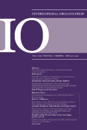

收录于合集
作品简介
【作者】 克里斯托弗·海默尔（Christopher Hemmer），美国空军大学国际安全副教授；彼特·卡赞斯坦（Peter J. Katzenstein），康奈尔大学小卡朋特国际关系讲席教授
【编译】 李雯珲（国政学人编译员，南开大学周恩来政府管理学院）
【校对】 虞敷扬
【审核】 丁伟航
【排版】 贺奕
【来源】
Hemmer, C., & Katzenstein, P. J. (2002). Why is There No NATO in Asia? Collective Identity, Regionalism, and the Origins of Multilateralism. International Organization , 56 (3), 575–607.
期刊介绍

International Organization（《国际组织》），简称“IO”，是一份经过同行评议的季刊，涵盖国际事务的领域包括：外交政策、国际关系、国际与比较政治经济学、安全政策、环境争端与解决、欧洲一体化、联盟模式与战争、谈判与冲突解决、经济发展与调整、国际资本流动等。它成立于1947年，由剑桥大学出版社代表国际组织基金会出版，主编是乔治城大学的Erik Voeten。根据Journal Citation Reports显示，2018年IO杂志影响因子为4.508，在91个国际关系类期刊中排名第一（1/9），在176个政治科学类期刊中排名第一（1/176）。
为什么亚洲没有北约？ 集体认同，地区主义和多边主义的起源
Why is There No NATO in Asia? Collective Identity, Regionalism, and the Origins of Multilateralism
内容提要
美国决策者对欧洲的认同和认为与欧洲国家同属一个政治共同体的观念，以及基于物质和政治收益因素的考量，促使美国在欧洲偏好多边主义。相反，对亚洲缺乏认同感，以及对于亚洲国家的优越感，使美国在亚洲偏好双边主义。
文章导读
一、 引言 **** ****
地区集团和地区效应在世界政治中的重要性日益上升。二战后，美国试图建立北大西洋和东南亚两个区域组织。然而，这两个区域集团的形式大有不同。美国倾向于和北大西洋的伙伴基于多边主义原则采取行动；而和东南亚地区的伙伴则采取双边合作形式。对于此，作者认为，集体认同观念发挥了重要作用。受种族、历史、政治和文化因素的影响，美国决策者认为，其在欧洲潜在的盟友都是联盟共同体中相对平等的一员。而对于亚洲盟友。美国认为它们各自区别很大，且在联盟中的地位在美国之下。
对于多边主义的双边主义的讨论不只是关于历史，还与国际政治中的重大理论密切相关。最近几年，国际关系中的现实主义者和自由主义者就世界政治中物质实力和制度的效率对比展开了多次辩论。但是，严格局限于其中某一个理论，都不能得到很有信服力的解释。作者吸收了建构主义的观念，提出折中主义。折中主义的解释兼顾了实力地位和威胁感知等社会因素，以及理性主义中的物质因素和对效率的关注。折中主义也削减了国内分析和国际分析之间的区别。
文章第二部分简要介绍了冷战初期美国在欧洲和亚洲采取的不同政策。第三部分，作者简要回顾既往文献对美国采取两种政策的解释。第四部分，作者综合物质和效率因素以及社会因素，提出了三个折中主义分析解释。最后，作者探讨了这一结论的理论和实证意义。
二、 1945年之后美国建构区域和区域制度 ****
当美国参议院第一次讨论战后其对欧承诺时，参议员就美国与欧洲是否同属一个区域存在分歧。参议员阿瑟·范登堡（Arthur Vandenberg）认为，美国与欧洲盟友同属北大西洋地区。这一分歧强调了区域不只是物质实体，成员的社会和认知建构也或多或少地对区域产生作用。
美国先后建立了北约（NATO）和东南亚条约组织（Southeast Asian Treaty Organization, SEATO）。但是在欧洲，美国选择推进多边框架发展；在亚洲，美国倾向于采取双边行动。北约与东南亚条约组织主要有以下几点不同。第一，相比于北约，东南亚条约组织的承诺语言要弱很多。北约采取集体防卫，对成员的攻击视为对集体的攻击；但是SEATO条约中只是将这种攻击归类为对和平和安全的威胁。第二，SEATO中美国明确声明其保留双边或单边行动的权力。第三，在组织方面，SEATO没有统一指挥官和统一部队。不仅如此，美国极力避免将北约模式应用到亚洲地区，甚至不想使用SEATO这个字母简称，避免人们将其与NATO进行类比。
三、 通用性的和非决定性的解释 ****
虽然针对二战后美国的安全布建研究主要集中在欧洲和亚洲地区，但是许多人试图用具有普世性的解释来分析多边或双边机制的兴起。如约翰·鲁杰（John Ruggie）认为美国采取多边主义可以推广国内民主制度，维护世界霸权；安玛莉·伯尔利（Anne-Marie Burley）认为美国支持多边合作是从大萧条中吸取了教训；还有学者认为美国采取双边主义是维护自己的主导权。但是这些研究无法解释美国政策在不同地区的差异。
另一些研究解释了美国在欧洲和亚洲的不同的政策偏好，但这些解释并不是决定性的。文章主要剖析了三个解释。一是史蒂文·韦伯（Steven Weber）主张，美国决策者认为多极世界比两极世界更加稳定，因此通过北约在欧洲培植力量中心，而在亚洲通过双边机制扶植日本。这一解释并没有说明力量中心的崛起与双边或多边安全安排之间的关系。第二个解释是亚洲许多国家对日本有深深的敌意。但实际上，欧洲国家对德国法西斯政权深恶痛绝，但仍然诞生了北约。第三个解释是艾森豪威尔的新面貌政策主张战略收缩，通过减少对地面部队的依赖、关注于成本更低的核威慑来降低国防支出，但是这并不一定意味着双边机制，在北约多边框架下通过与盟友共享核武器，仍然可以做到这一点。
总之，上述解释忽略了地区差异，只关注某一个地区的政策选择，都存在一定的缺陷。
四、 折中主义解释：实力、威胁和认同 **** ****
借鉴现实主义、自由主义和建构主义的观点，本文克服单一理论的局限，提出了折中主义解释。
1. 大国地位
虽然亚洲与欧洲都受到战火摧残，但美国政府认为，其欧洲盟友可以很快完成重建，恢复大国地位，而亚洲盟友会持久衰弱。如艾森豪威尔始终非常重视历史上英国、法国和德国的大国地位，认为它们目前的二流地位只是暂时现象。相比之下，大多数东南亚国家在1940年代后期才刚刚开始独立；而中国在革命后选择了社会主义道路，意识形态上的差异使得中美不可能结盟，在亚洲仅有日本具有成为大国的潜在可能性。
2. 有效回应威胁
自由主义主张欧洲和亚洲面临的主要威胁不同。在欧洲要警惕苏联的大规模入侵，但是在亚洲，主要是国内的共产主义暴动。对这两种威胁应当采取不同的措施来应对。
值得注意的是，对不同威胁的认知与身份认同紧密相关。北约要面对的不仅是对国家的侵略，更是对公民社会的侵略。在这一点上，北约国家意见一致。但是，对于亚洲国家，其国内问题和殖民历史使得对主要威胁的认知各有不同，对共产主义态度各异。
但是，战后伊始，欧洲各国的问题也是复杂多样，且主要是内部骚乱问题。且随着马歇尔计划的实施，美国越来越倾向于多边主义，即使苏联的威胁更多地体现在内部颠覆政权而不是外部进攻。因此，不论威胁是内部还是外部，美国都是在欧洲更倾向于多边主义，在亚洲更倾向于双边主义。仅从威胁认知角度的解释力仍然不足。接下来作者从身份认同角度提供一个更为全面的解释。
3. 地区、身份认同和机制形式
作者认为，不论是北大西洋还是东南亚，都并非地理事实，而是政治建构而成。集体认同在其中发挥了重要作用。美国决策者对这两个地区不同程度的认同感塑造了冷战初期美国采取的不同制度形式。玛莎·芬尼莫尔（Martha Finnemore）认为，身份认同（identification）“强调行为体之间的情感联系”，“是一个次序概念，可以根据情感的程度和对情感关注的变化进行区分”。身份认同对美国在两个地区的政策的影响与社会认同理论（social identity theory）密切相关。当人们自认为是特定群体的成员时，他们对待群体内成员和群体外成员的方式就会有明显不同。如对内更注重绝对收益，而对外更注重相对收益。
基于社会认同理论，就很容易理解美国的政策差异了。美国与欧洲国家在宗教和民主价值观念上的相似性使得它们之间很容易建立政治互信，形成“我们感”（we- feeling）和“同理心”（mutual responsiveness），继而美国将自己视为北大西洋组织中平等的一员，采取多边主义机制。而美国与大多数亚洲国家之间缺少这种亲密感和互信，宗教和民主观念以及人种上的差异都进一步拉大了美国与亚洲国家之间的距离感，巨大的实力差异更是增强了美国的优越感，其采取双边主义机制就不足为奇了。
北大西洋共同体的起源 The Origin of the North Atlantic Community
北大西洋共同体概念的形成充分体现了身份认同在美国政策中的作用，揭示了身份认同问题如何与物质因素和政治运算紧密联系。二战期间美国对欧洲的支援大大增进了二者之间的联系，美国逐渐从孤立主义中走出来，大西洋联盟逐渐形成。1945年之后，苏联向挪威施压，要求挪威签署一项防御协议，这推动了向“北”大西洋的转移。与此同时，“北大西洋”地理概念的形成也是欧内斯特·贝文（Ernest Bevin）政治谋划的结果，英国政府希望阻止美国在战后与欧洲脱钩，避免美国再次退回到孤立主义。冰岛、格陵兰岛和亚速尔群岛对于基地和军队运输的重要性也突出了大西洋的地位。在美国国内，对北大西洋共同体的关注更容易说服选民和警惕欧洲纠葛的国会；此外，基于身份认同形成的“共同体”概念能够超越军事战略的考量。
对于加拿大而言，北大西洋共同体意味着其不需要单独应对强大的美国。
需要注意的是，地理位置对其有限制作用，但不是决定性因素。非大西洋沿岸国家意大利、希腊、土耳其，以及非民主国家葡萄牙的加入体现了战略考量和身份认同的折中。
1948年，官方话语发生了重大转变。此前，跨大西洋联盟被称为欧洲或西欧联盟；1948年之后，官方文件迅速转变为“大西洋或北大西洋条约体系和共同体”。尽管美国国务院官员坚称北大西洋区域是历史上就有的，而非条约签订后才形成，但是1948年以前，美国国务院官员很少谈及北大西洋地区。显然，和地理区域一样，历史也不是决定性因素。
东南亚的多重起源 The Origins of Southeast Asia
东南亚作为一个特别明确的地区，也有一段较短的形成过程。二战以前，该地区被分为受中国影响较大的中南半岛、受西班牙影响的菲律宾和受印度文化影响的其他地区。太平洋战争中日本对该地区的占领促使“东南亚”概念兴起。在美国加入二战并且把重心放在欧洲战场后，关于东南亚地区的讨论有所衰退。在重点回到亚洲后，该地区的名称仍未确定。基于对蒋介石领导中国战场的支持，罗斯福拒绝了丘吉尔提议建立东亚司令部，而是回到“东南亚”这一概念。1943年8月魁北克会议上英美同意建立东南亚司令部（Southeast Asian Command, SEAC），SEAC的职责范围大致相当于今天的东南亚。
在共产党获得中国革命的胜利后，杜鲁门政府意识到东南亚成为其对中国、日本、英国和法国政策的交汇点，通过支持亲西方势力来实现其政治目的。美国逐渐将东南亚视为区域一体，1954年9月东南亚条约组织（SEATO）的成立是区域化和加强该地区与外界联系的重要标志。在SEATO成员中，只有泰国和菲律宾是东南亚国家，其他成员（澳大利亚、法国、英国、新西兰、巴基斯坦和美国）都是域外国家。尽管英法都是美国在欧洲的盟友，但是美国并不愿意在亚洲与它们加强合作。英法在亚洲是作为殖民者的身份，美国不愿意把自己与欧洲国家在亚洲的殖民行为紧密联系起来，因此其不希望与欧洲国家在亚洲进行深入的多边合作。这种身份认同的可塑性——美国喜欢在欧洲的欧洲国家，但不喜欢在亚洲的欧洲国家——体现了只关注集体认同的局限性，突出了折中主义解释的优越性。
北约和东南亚条约组织 NATO and SEATO
基于文明、种族、宗教以及共同的历史记忆，美国自然而然地与欧洲人而不是东南亚人民形成了身份认同。这种不同程度的相互认同感是冷战初期美国对欧洲和亚洲盟友偏好不同的制度形式的重要原因。
围绕北约形成的一个重要层面就是美国与欧洲之间普遍的身份认同。这种情感充分体现在北约条款中，其中强调了成员“捍卫自由、共同的遗产和文明”的决心。部分由于欧美人民之间强烈的认同感，美国倾向于高估其欧洲盟友的实力。美国认为欧洲是“世界权力中心”之一，并在北约内部建立多边核共享机制。
美国对待SEATO的态度就完全不同了。美国在关于亚洲盟友的讨论中极少提及认同感，文明、种族、宗教、历史等方面的重大差异导致人们对这些国家作为亚洲联盟一部分的当前和未来实力产生了强烈的怀疑。
欧洲多边主义也让美国政客们得以避开美国不同种族投票集团的挑战。许多美国人是欧洲裔，以多边的方式均衡对待欧洲国家可以较好地平衡这些投票集团。冷战初期亚裔投票集团并不重要，所以不存在类似于前者的选举困境。
除了缺少认同感，美国对亚洲国家还有一种优越感，认为自己优于亚洲国家。其对于亚洲国家的政策目标不是促进多边平等合作，而是加强美国的单边主导地位。美国对外政策的一个传统是基于种族划分世界等级，美国和英国居于首位，其次是欧洲其他国家，再次是亚洲、拉丁美洲和非洲。尽管现在美国已经很少提及种族分类，但是这种等级观念仍然存在。
美国决策者对欧洲的认同和认为与欧洲国家同属一个政治共同体的观念，以及基于物质和政治收益因素的考量，促使美国在欧洲偏好多边主义。相反，对亚洲缺乏认同感，以及对于亚洲国家的优越感，使美国在亚洲偏好双边主义。
五、 结 论 **** ****
本文通过研究北大西洋和东南亚区域的起源以及不同的制度形式，在很大程度上揭示了世界政治的形态和塑造。本文并没有覆盖这一过程的方方面面，但仍然存在很大的研究价值；此外，对于分析折中主义特定因果论点的形式和变量相互作用的顺序仍然有讨论的空间。
国际关系中，折中主义理论分析与追求单一范式纯粹性之间的矛盾是一个重要的争论。作者认为，坚持问题导向而不是方法导向，可以更好地适应特定情境下政治过程的复杂性。
从美国集体认同的建构角度我们可以很容易理解美国在欧洲采取多边主义，而在亚洲采取双边主义的做法。根据路径依赖理论，我们可以更好地理解北约东扩。意大利加入北约说明地理位置并非决定性因素。苏联解体后，北约向东扩张，有些人认为这会分化北约内部的身份认同，但是詹姆斯·库尔斯（James Kurth）认为，允许波罗的海国家加入北约最有力的理由之一，恰恰是“这些国家代表了西方文明最东部的扩张。”但是在亚洲，除了历史仇恨与文化、经济发展水平和实力差异，亚太身份认同的缺失也是阻碍多边机制发展的重要原因。
基于上述讨论，作者认为，美国的身份认同感，与其他因素一起，仍在影响着美国对外政策的方向。如美国干预南联盟，却没有阻止卢旺达大屠杀，其中就有美国对欧洲的认同感的影响。如今，亚裔美国人、拉美裔美国人以及非洲裔美国人比重不断增加和由此产生的选举力量，是否会改变美国这种以欧洲为中心的认同感，还是这些群体在某种意义上仍将是“永久的外国人”，还有待观察。然而，这个问题的答案很可能对美国外交政策的未来产生实质性的影响。
_ ** _ ** _ ** _ 本文由国政学人独家编译推荐**__
扫下方二维码查看往期精彩
【战略研究】节点防御：美国在欧洲与东亚地区联盟体系的结构变化丨国政学人 第277期
【方法论衡】亚历山大·温特：国际关系中的建构关系与因果关系丨国政学人 第283期
【中美关系】江忆恩：秩序世界下的中国：反思中国国际关系中的合规与挑战丨国政学人 第284期
【新刊速递】第09期| International Relations of Asia-Pacific Vol.19,No.3
【新刊速递】第10期 | International Studies Review, Volume.21, No.3, 2019
【新刊速递】第11期|Cooperation and Conflict, Vol. 54, No. 4, 2019
【新刊速递】第12期 | International Affairs, Vol.95, No.6，2019
分类导览 1
分类导览 2
点“在看”给我一朵小黄花